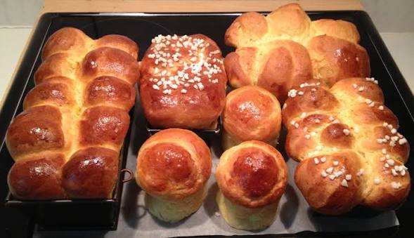

Home
Pan de Muertos (Mexican Bread of the Dead)

Description
Pan de muerto is a type of Mexican sweet bread that is associated with Day of the Dead, a Mexican holiday that is celebrated on November 1 and 2. The round bread symbolizes the cycle of life and death because of its circular shape. Extra dough is arranged on top to represent the skull, crossbones, and tears shed for the living. It is traditionally flavored with anise seeds and orange zest.
How to Store Pan de Muerto
Store the bread (ideally in a bread box or under a cake dome) at room temperature for up to three days.
Ingredients
Bread
- ¼ cup milk
- ¼ cup butter
- ¼ cup warm water (110 degrees F/45 degrees C)
- 3 cups all-purpose flour
- ¼ cup white sugar
- 2 teaspoons anise seed
- 1 ¼ teaspoons active dry yeast
- ½ teaspoon salt
- 2 large eggs, beaten
- 1 tablespoon orange zest
Glaze
- ¼ cup white sugar
- ¼ cup orange juice
- 2 teaspoons orange zest
- 2 tablespoons white sugar
Directions
- Gather the ingredients.
- To make the bread: Heat milk and butter in a medium saucepan over low heat until butter melts. Remove from heat and add warm water. Mixture should be around 110 degrees F (43 degrees C).
- Combine 1 cup flour, sugar, anise seed, yeast, and salt in a large bowl. Beat in warm milk mixture, then add eggs and orange zest; beat until well combined. Stir in 1/2 cup flour and continue adding more flour until dough is soft.
- Turn dough out onto a lightly floured surface; knead until smooth and elastic. Place dough into a lightly greased bowl. Cover with plastic wrap and let rise in a warm place until doubled in size, 1 to 2 hours.
- Punch dough down and shape into a large round loaf with a round knob on top. Place dough onto a baking sheet; loosely cover with plastic wrap. Let rise in a warm place until just about doubled in size, about 1 hour.
- Preheat the oven to 350 degrees F (175 degrees C). Bake in the preheated oven until golden brown, 35 to 45 minutes. Cool slightly before brushing with glaze.
- To make the glaze: Combine 1/4 cup sugar, orange juice, and orange zest in a small saucepan. Bring to a boil over medium heat and boil for 2 minutes.
- Brush glaze over top of warm bread. Sprinkle with 2 tablespoons sugar.